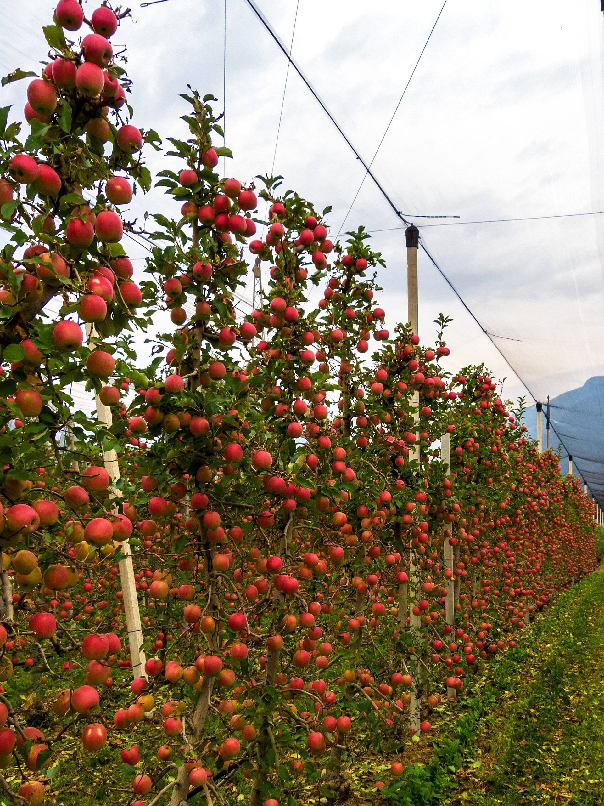

枝头两个月。
采摘从 9 月持续到 10 月底。
- 1 月
- 2 月
- 3 月
- 4 月
- 5 月
- 6 月
- 7 月
- 8 月
- 9 月自助采摘
- 10 月自助采摘
- 11 月
- 12 月

伸手探入，托起一拧。
熟透的苹果一拧就落进手心。还挂得牢的，再等一周。
22 个苹果品种，种满果树行。
- 种植用途
- 苹果酒，六英亩
- 果树行间
- 边采边尝
- 带回家
- 一袋你中意的树上摘下的苹果
三款苹果酒，采完带回家。
价格即将公布。
干型
爽脆，佐餐宜
半干
更圆润，带一丝甜
甜型
适合一日将尽时

规划到访。
- 时间
- 9 月至 10 月底
- 地点
- 赫里福德郡，完整地址即将公布
- 带回家
- 你的苹果和一瓶苹果酒